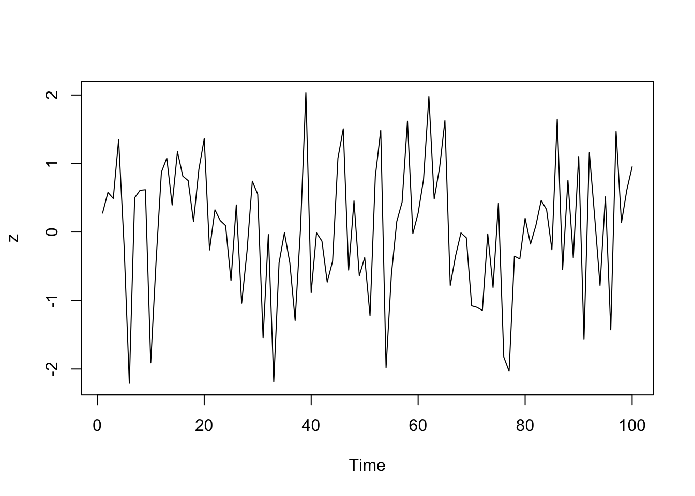
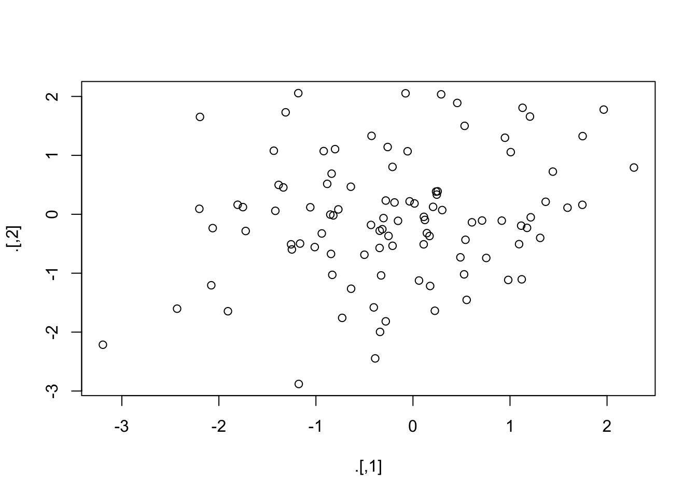

library(tidyverse)
library(magrittr)Pipe an object forward into a function or call expression.
iris| Sepal.Length | Sepal.Width | Petal.Length | Petal.Width | Species |
|---|---|---|---|---|
| 5.1 | 3.5 | 1.4 | 0.2 | setosa |
| 4.9 | 3 | 1.4 | 0.2 | setosa |
| 4.7 | 3.2 | 1.3 | 0.2 | setosa |
| 4.6 | 3.1 | 1.5 | 0.2 | setosa |
| 5 | 3.6 | 1.4 | 0.2 | setosa |
| 5.4 | 3.9 | 1.7 | 0.4 | setosa |
| 4.6 | 3.4 | 1.4 | 0.3 | setosa |
| 5 | 3.4 | 1.5 | 0.2 | setosa |
| 4.4 | 2.9 | 1.4 | 0.2 | setosa |
| 4.9 | 3.1 | 1.5 | 0.1 | setosa |
| 5.4 | 3.7 | 1.5 | 0.2 | setosa |
| 4.8 | 3.4 | 1.6 | 0.2 | setosa |
| 4.8 | 3 | 1.4 | 0.1 | setosa |
| 4.3 | 3 | 1.1 | 0.1 | setosa |
| 5.8 | 4 | 1.2 | 0.2 | setosa |
| 5.7 | 4.4 | 1.5 | 0.4 | setosa |
| 5.4 | 3.9 | 1.3 | 0.4 | setosa |
| 5.1 | 3.5 | 1.4 | 0.3 | setosa |
| 5.7 | 3.8 | 1.7 | 0.3 | setosa |
| 5.1 | 3.8 | 1.5 | 0.3 | setosa |
| 5.4 | 3.4 | 1.7 | 0.2 | setosa |
| 5.1 | 3.7 | 1.5 | 0.4 | setosa |
| 4.6 | 3.6 | 1 | 0.2 | setosa |
| 5.1 | 3.3 | 1.7 | 0.5 | setosa |
| 4.8 | 3.4 | 1.9 | 0.2 | setosa |
| 5 | 3 | 1.6 | 0.2 | setosa |
| 5 | 3.4 | 1.6 | 0.4 | setosa |
| 5.2 | 3.5 | 1.5 | 0.2 | setosa |
| 5.2 | 3.4 | 1.4 | 0.2 | setosa |
| 4.7 | 3.2 | 1.6 | 0.2 | setosa |
| 4.8 | 3.1 | 1.6 | 0.2 | setosa |
| 5.4 | 3.4 | 1.5 | 0.4 | setosa |
| 5.2 | 4.1 | 1.5 | 0.1 | setosa |
| 5.5 | 4.2 | 1.4 | 0.2 | setosa |
| 4.9 | 3.1 | 1.5 | 0.2 | setosa |
| 5 | 3.2 | 1.2 | 0.2 | setosa |
| 5.5 | 3.5 | 1.3 | 0.2 | setosa |
| 4.9 | 3.6 | 1.4 | 0.1 | setosa |
| 4.4 | 3 | 1.3 | 0.2 | setosa |
| 5.1 | 3.4 | 1.5 | 0.2 | setosa |
| 5 | 3.5 | 1.3 | 0.3 | setosa |
| 4.5 | 2.3 | 1.3 | 0.3 | setosa |
| 4.4 | 3.2 | 1.3 | 0.2 | setosa |
| 5 | 3.5 | 1.6 | 0.6 | setosa |
| 5.1 | 3.8 | 1.9 | 0.4 | setosa |
| 4.8 | 3 | 1.4 | 0.3 | setosa |
| 5.1 | 3.8 | 1.6 | 0.2 | setosa |
| 4.6 | 3.2 | 1.4 | 0.2 | setosa |
| 5.3 | 3.7 | 1.5 | 0.2 | setosa |
| 5 | 3.3 | 1.4 | 0.2 | setosa |
| 7 | 3.2 | 4.7 | 1.4 | versicolor |
| 6.4 | 3.2 | 4.5 | 1.5 | versicolor |
| 6.9 | 3.1 | 4.9 | 1.5 | versicolor |
| 5.5 | 2.3 | 4 | 1.3 | versicolor |
| 6.5 | 2.8 | 4.6 | 1.5 | versicolor |
| 5.7 | 2.8 | 4.5 | 1.3 | versicolor |
| 6.3 | 3.3 | 4.7 | 1.6 | versicolor |
| 4.9 | 2.4 | 3.3 | 1 | versicolor |
| 6.6 | 2.9 | 4.6 | 1.3 | versicolor |
| 5.2 | 2.7 | 3.9 | 1.4 | versicolor |
| 5 | 2 | 3.5 | 1 | versicolor |
| 5.9 | 3 | 4.2 | 1.5 | versicolor |
| 6 | 2.2 | 4 | 1 | versicolor |
| 6.1 | 2.9 | 4.7 | 1.4 | versicolor |
| 5.6 | 2.9 | 3.6 | 1.3 | versicolor |
| 6.7 | 3.1 | 4.4 | 1.4 | versicolor |
| 5.6 | 3 | 4.5 | 1.5 | versicolor |
| 5.8 | 2.7 | 4.1 | 1 | versicolor |
| 6.2 | 2.2 | 4.5 | 1.5 | versicolor |
| 5.6 | 2.5 | 3.9 | 1.1 | versicolor |
| 5.9 | 3.2 | 4.8 | 1.8 | versicolor |
| 6.1 | 2.8 | 4 | 1.3 | versicolor |
| 6.3 | 2.5 | 4.9 | 1.5 | versicolor |
| 6.1 | 2.8 | 4.7 | 1.2 | versicolor |
| 6.4 | 2.9 | 4.3 | 1.3 | versicolor |
| 6.6 | 3 | 4.4 | 1.4 | versicolor |
| 6.8 | 2.8 | 4.8 | 1.4 | versicolor |
| 6.7 | 3 | 5 | 1.7 | versicolor |
| 6 | 2.9 | 4.5 | 1.5 | versicolor |
| 5.7 | 2.6 | 3.5 | 1 | versicolor |
| 5.5 | 2.4 | 3.8 | 1.1 | versicolor |
| 5.5 | 2.4 | 3.7 | 1 | versicolor |
| 5.8 | 2.7 | 3.9 | 1.2 | versicolor |
| 6 | 2.7 | 5.1 | 1.6 | versicolor |
| 5.4 | 3 | 4.5 | 1.5 | versicolor |
| 6 | 3.4 | 4.5 | 1.6 | versicolor |
| 6.7 | 3.1 | 4.7 | 1.5 | versicolor |
| 6.3 | 2.3 | 4.4 | 1.3 | versicolor |
| 5.6 | 3 | 4.1 | 1.3 | versicolor |
| 5.5 | 2.5 | 4 | 1.3 | versicolor |
| 5.5 | 2.6 | 4.4 | 1.2 | versicolor |
| 6.1 | 3 | 4.6 | 1.4 | versicolor |
| 5.8 | 2.6 | 4 | 1.2 | versicolor |
| 5 | 2.3 | 3.3 | 1 | versicolor |
| 5.6 | 2.7 | 4.2 | 1.3 | versicolor |
| 5.7 | 3 | 4.2 | 1.2 | versicolor |
| 5.7 | 2.9 | 4.2 | 1.3 | versicolor |
| 6.2 | 2.9 | 4.3 | 1.3 | versicolor |
| 5.1 | 2.5 | 3 | 1.1 | versicolor |
| 5.7 | 2.8 | 4.1 | 1.3 | versicolor |
| 6.3 | 3.3 | 6 | 2.5 | virginica |
| 5.8 | 2.7 | 5.1 | 1.9 | virginica |
| 7.1 | 3 | 5.9 | 2.1 | virginica |
| 6.3 | 2.9 | 5.6 | 1.8 | virginica |
| 6.5 | 3 | 5.8 | 2.2 | virginica |
| 7.6 | 3 | 6.6 | 2.1 | virginica |
| 4.9 | 2.5 | 4.5 | 1.7 | virginica |
| 7.3 | 2.9 | 6.3 | 1.8 | virginica |
| 6.7 | 2.5 | 5.8 | 1.8 | virginica |
| 7.2 | 3.6 | 6.1 | 2.5 | virginica |
| 6.5 | 3.2 | 5.1 | 2 | virginica |
| 6.4 | 2.7 | 5.3 | 1.9 | virginica |
| 6.8 | 3 | 5.5 | 2.1 | virginica |
| 5.7 | 2.5 | 5 | 2 | virginica |
| 5.8 | 2.8 | 5.1 | 2.4 | virginica |
| 6.4 | 3.2 | 5.3 | 2.3 | virginica |
| 6.5 | 3 | 5.5 | 1.8 | virginica |
| 7.7 | 3.8 | 6.7 | 2.2 | virginica |
| 7.7 | 2.6 | 6.9 | 2.3 | virginica |
| 6 | 2.2 | 5 | 1.5 | virginica |
| 6.9 | 3.2 | 5.7 | 2.3 | virginica |
| 5.6 | 2.8 | 4.9 | 2 | virginica |
| 7.7 | 2.8 | 6.7 | 2 | virginica |
| 6.3 | 2.7 | 4.9 | 1.8 | virginica |
| 6.7 | 3.3 | 5.7 | 2.1 | virginica |
| 7.2 | 3.2 | 6 | 1.8 | virginica |
| 6.2 | 2.8 | 4.8 | 1.8 | virginica |
| 6.1 | 3 | 4.9 | 1.8 | virginica |
| 6.4 | 2.8 | 5.6 | 2.1 | virginica |
| 7.2 | 3 | 5.8 | 1.6 | virginica |
| 7.4 | 2.8 | 6.1 | 1.9 | virginica |
| 7.9 | 3.8 | 6.4 | 2 | virginica |
| 6.4 | 2.8 | 5.6 | 2.2 | virginica |
| 6.3 | 2.8 | 5.1 | 1.5 | virginica |
| 6.1 | 2.6 | 5.6 | 1.4 | virginica |
| 7.7 | 3 | 6.1 | 2.3 | virginica |
| 6.3 | 3.4 | 5.6 | 2.4 | virginica |
| 6.4 | 3.1 | 5.5 | 1.8 | virginica |
| 6 | 3 | 4.8 | 1.8 | virginica |
| 6.9 | 3.1 | 5.4 | 2.1 | virginica |
| 6.7 | 3.1 | 5.6 | 2.4 | virginica |
| 6.9 | 3.1 | 5.1 | 2.3 | virginica |
| 5.8 | 2.7 | 5.1 | 1.9 | virginica |
| 6.8 | 3.2 | 5.9 | 2.3 | virginica |
| 6.7 | 3.3 | 5.7 | 2.5 | virginica |
| 6.7 | 3 | 5.2 | 2.3 | virginica |
| 6.3 | 2.5 | 5 | 1.9 | virginica |
| 6.5 | 3 | 5.2 | 2 | virginica |
| 6.2 | 3.4 | 5.4 | 2.3 | virginica |
| 5.9 | 3 | 5.1 | 1.8 | virginica |
Expose the names in lhs to the rhs expression. This is useful when functions do not have a built-in data argument.
iris %>%
subset(Sepal.Length > mean(Sepal.Length)) | Sepal.Length | Sepal.Width | Petal.Length | Petal.Width | Species |
|---|---|---|---|---|
| 7 | 3.2 | 4.7 | 1.4 | versicolor |
| 6.4 | 3.2 | 4.5 | 1.5 | versicolor |
| 6.9 | 3.1 | 4.9 | 1.5 | versicolor |
| 6.5 | 2.8 | 4.6 | 1.5 | versicolor |
| 6.3 | 3.3 | 4.7 | 1.6 | versicolor |
| 6.6 | 2.9 | 4.6 | 1.3 | versicolor |
| 5.9 | 3 | 4.2 | 1.5 | versicolor |
| 6 | 2.2 | 4 | 1 | versicolor |
| 6.1 | 2.9 | 4.7 | 1.4 | versicolor |
| 6.7 | 3.1 | 4.4 | 1.4 | versicolor |
| 6.2 | 2.2 | 4.5 | 1.5 | versicolor |
| 5.9 | 3.2 | 4.8 | 1.8 | versicolor |
| 6.1 | 2.8 | 4 | 1.3 | versicolor |
| 6.3 | 2.5 | 4.9 | 1.5 | versicolor |
| 6.1 | 2.8 | 4.7 | 1.2 | versicolor |
| 6.4 | 2.9 | 4.3 | 1.3 | versicolor |
| 6.6 | 3 | 4.4 | 1.4 | versicolor |
| 6.8 | 2.8 | 4.8 | 1.4 | versicolor |
| 6.7 | 3 | 5 | 1.7 | versicolor |
| 6 | 2.9 | 4.5 | 1.5 | versicolor |
| 6 | 2.7 | 5.1 | 1.6 | versicolor |
| 6 | 3.4 | 4.5 | 1.6 | versicolor |
| 6.7 | 3.1 | 4.7 | 1.5 | versicolor |
| 6.3 | 2.3 | 4.4 | 1.3 | versicolor |
| 6.1 | 3 | 4.6 | 1.4 | versicolor |
| 6.2 | 2.9 | 4.3 | 1.3 | versicolor |
| 6.3 | 3.3 | 6 | 2.5 | virginica |
| 7.1 | 3 | 5.9 | 2.1 | virginica |
| 6.3 | 2.9 | 5.6 | 1.8 | virginica |
| 6.5 | 3 | 5.8 | 2.2 | virginica |
| 7.6 | 3 | 6.6 | 2.1 | virginica |
| 7.3 | 2.9 | 6.3 | 1.8 | virginica |
| 6.7 | 2.5 | 5.8 | 1.8 | virginica |
| 7.2 | 3.6 | 6.1 | 2.5 | virginica |
| 6.5 | 3.2 | 5.1 | 2 | virginica |
| 6.4 | 2.7 | 5.3 | 1.9 | virginica |
| 6.8 | 3 | 5.5 | 2.1 | virginica |
| 6.4 | 3.2 | 5.3 | 2.3 | virginica |
| 6.5 | 3 | 5.5 | 1.8 | virginica |
| 7.7 | 3.8 | 6.7 | 2.2 | virginica |
| 7.7 | 2.6 | 6.9 | 2.3 | virginica |
| 6 | 2.2 | 5 | 1.5 | virginica |
| 6.9 | 3.2 | 5.7 | 2.3 | virginica |
| 7.7 | 2.8 | 6.7 | 2 | virginica |
| 6.3 | 2.7 | 4.9 | 1.8 | virginica |
| 6.7 | 3.3 | 5.7 | 2.1 | virginica |
| 7.2 | 3.2 | 6 | 1.8 | virginica |
| 6.2 | 2.8 | 4.8 | 1.8 | virginica |
| 6.1 | 3 | 4.9 | 1.8 | virginica |
| 6.4 | 2.8 | 5.6 | 2.1 | virginica |
| 7.2 | 3 | 5.8 | 1.6 | virginica |
| 7.4 | 2.8 | 6.1 | 1.9 | virginica |
| 7.9 | 3.8 | 6.4 | 2 | virginica |
| 6.4 | 2.8 | 5.6 | 2.2 | virginica |
| 6.3 | 2.8 | 5.1 | 1.5 | virginica |
| 6.1 | 2.6 | 5.6 | 1.4 | virginica |
| 7.7 | 3 | 6.1 | 2.3 | virginica |
| 6.3 | 3.4 | 5.6 | 2.4 | virginica |
| 6.4 | 3.1 | 5.5 | 1.8 | virginica |
| 6 | 3 | 4.8 | 1.8 | virginica |
| 6.9 | 3.1 | 5.4 | 2.1 | virginica |
| 6.7 | 3.1 | 5.6 | 2.4 | virginica |
| 6.9 | 3.1 | 5.1 | 2.3 | virginica |
| 6.8 | 3.2 | 5.9 | 2.3 | virginica |
| 6.7 | 3.3 | 5.7 | 2.5 | virginica |
| 6.7 | 3 | 5.2 | 2.3 | virginica |
| 6.3 | 2.5 | 5 | 1.9 | virginica |
| 6.5 | 3 | 5.2 | 2 | virginica |
| 6.2 | 3.4 | 5.4 | 2.3 | virginica |
| 5.9 | 3 | 5.1 | 1.8 | virginica |
iris %>%
subset(Sepal.Length > mean(Sepal.Length)) %$%
cor(Sepal.Length, Sepal.Width)## [1] 0.3361992iris %>%
filter(Sepal.Length > 1.6 ) %$%
cor(Sepal.Length, Sepal.Width)## [1] -0.1175698#set.seed(1234)
data.frame(z = rnorm(100)) %$%
ts.plot(z)
Pipe an object forward into a function or call expression and update the lhs object with the resulting value.
x <- rnorm(100)
x## [1] -0.500625048 0.944208091 1.286686736 1.672997903 -0.194933287
## [6] -1.296995908 0.062104892 1.472689694 -0.302025155 0.063032323
## [11] -0.187723124 -0.280184462 -0.158488537 -0.403478610 -0.329157361
## [16] 0.788794403 -1.722476869 -1.131061365 0.089509341 -0.609486142
## [21] 0.446746796 -0.061775065 1.524176139 0.848321393 0.051038940
## [26] 0.032971467 -2.374367465 -0.281311359 -1.687972054 -2.532940556
## [31] 0.740348630 0.677527951 -1.315169179 0.603497461 -0.285183788
## [36] -1.030359745 2.158657200 -0.269070255 0.407695193 -0.143359687
## [41] -0.496733795 0.040608157 -1.173096833 0.259448517 -0.246372951
## [46] 0.484039321 -1.097428060 2.015246421 1.590575681 -0.469225655
## [51] -1.541501114 0.832753542 1.384781411 -0.004635934 -0.551075428
## [56] 0.186821183 -1.491618834 0.461388269 -1.129316111 0.407625964
## [61] 0.235297707 1.105704228 -0.519881204 -0.886528523 0.750558840
## [66] -0.037384363 0.778770756 -0.486068141 0.359419485 -0.074461130
## [71] 0.981450711 2.558153355 -0.180436599 -0.442161660 -0.881262978
## [76] -0.742688852 -0.754025067 0.899936498 -0.313367229 0.937466814
## [81] 1.376190911 -0.164812857 0.626375260 0.731663966 -1.078918920
## [86] 0.361215431 -1.858366212 -0.087555789 -0.009148410 0.167365104
## [91] 1.135677870 -0.426095868 1.956932484 -0.584405976 -0.162405820
## [96] 1.012061141 -0.099785072 -0.126781697 1.472414651 -0.237818555x2= data.frame(x)
x2| x |
|---|
| -0.501 |
| 0.944 |
| 1.29 |
| 1.67 |
| -0.195 |
| -1.3 |
| 0.0621 |
| 1.47 |
| -0.302 |
| 0.063 |
| -0.188 |
| -0.28 |
| -0.158 |
| -0.403 |
| -0.329 |
| 0.789 |
| -1.72 |
| -1.13 |
| 0.0895 |
| -0.609 |
| 0.447 |
| -0.0618 |
| 1.52 |
| 0.848 |
| 0.051 |
| 0.033 |
| -2.37 |
| -0.281 |
| -1.69 |
| -2.53 |
| 0.74 |
| 0.678 |
| -1.32 |
| 0.603 |
| -0.285 |
| -1.03 |
| 2.16 |
| -0.269 |
| 0.408 |
| -0.143 |
| -0.497 |
| 0.0406 |
| -1.17 |
| 0.259 |
| -0.246 |
| 0.484 |
| -1.1 |
| 2.02 |
| 1.59 |
| -0.469 |
| -1.54 |
| 0.833 |
| 1.38 |
| -0.00464 |
| -0.551 |
| 0.187 |
| -1.49 |
| 0.461 |
| -1.13 |
| 0.408 |
| 0.235 |
| 1.11 |
| -0.52 |
| -0.887 |
| 0.751 |
| -0.0374 |
| 0.779 |
| -0.486 |
| 0.359 |
| -0.0745 |
| 0.981 |
| 2.56 |
| -0.18 |
| -0.442 |
| -0.881 |
| -0.743 |
| -0.754 |
| 0.9 |
| -0.313 |
| 0.937 |
| 1.38 |
| -0.165 |
| 0.626 |
| 0.732 |
| -1.08 |
| 0.361 |
| -1.86 |
| -0.0876 |
| -0.00915 |
| 0.167 |
| 1.14 |
| -0.426 |
| 1.96 |
| -0.584 |
| -0.162 |
| 1.01 |
| -0.0998 |
| -0.127 |
| 1.47 |
| -0.238 |
df= x %<>% abs %>% mean
df## [1] 0.7443446x2 %>% select(x) %>%
mutate(sqrtt= sqrt(x))## Warning: There was 1 warning in `mutate()`.
## ℹ In argument: `sqrtt = sqrt(x)`.
## Caused by warning in `sqrt()`:
## ! NaNs produced| x | sqrtt |
|---|---|
| -0.501 | NaN |
| 0.944 | 0.972 |
| 1.29 | 1.13 |
| 1.67 | 1.29 |
| -0.195 | NaN |
| -1.3 | NaN |
| 0.0621 | 0.249 |
| 1.47 | 1.21 |
| -0.302 | NaN |
| 0.063 | 0.251 |
| -0.188 | NaN |
| -0.28 | NaN |
| -0.158 | NaN |
| -0.403 | NaN |
| -0.329 | NaN |
| 0.789 | 0.888 |
| -1.72 | NaN |
| -1.13 | NaN |
| 0.0895 | 0.299 |
| -0.609 | NaN |
| 0.447 | 0.668 |
| -0.0618 | NaN |
| 1.52 | 1.23 |
| 0.848 | 0.921 |
| 0.051 | 0.226 |
| 0.033 | 0.182 |
| -2.37 | NaN |
| -0.281 | NaN |
| -1.69 | NaN |
| -2.53 | NaN |
| 0.74 | 0.86 |
| 0.678 | 0.823 |
| -1.32 | NaN |
| 0.603 | 0.777 |
| -0.285 | NaN |
| -1.03 | NaN |
| 2.16 | 1.47 |
| -0.269 | NaN |
| 0.408 | 0.639 |
| -0.143 | NaN |
| -0.497 | NaN |
| 0.0406 | 0.202 |
| -1.17 | NaN |
| 0.259 | 0.509 |
| -0.246 | NaN |
| 0.484 | 0.696 |
| -1.1 | NaN |
| 2.02 | 1.42 |
| 1.59 | 1.26 |
| -0.469 | NaN |
| -1.54 | NaN |
| 0.833 | 0.913 |
| 1.38 | 1.18 |
| -0.00464 | NaN |
| -0.551 | NaN |
| 0.187 | 0.432 |
| -1.49 | NaN |
| 0.461 | 0.679 |
| -1.13 | NaN |
| 0.408 | 0.638 |
| 0.235 | 0.485 |
| 1.11 | 1.05 |
| -0.52 | NaN |
| -0.887 | NaN |
| 0.751 | 0.866 |
| -0.0374 | NaN |
| 0.779 | 0.882 |
| -0.486 | NaN |
| 0.359 | 0.6 |
| -0.0745 | NaN |
| 0.981 | 0.991 |
| 2.56 | 1.6 |
| -0.18 | NaN |
| -0.442 | NaN |
| -0.881 | NaN |
| -0.743 | NaN |
| -0.754 | NaN |
| 0.9 | 0.949 |
| -0.313 | NaN |
| 0.937 | 0.968 |
| 1.38 | 1.17 |
| -0.165 | NaN |
| 0.626 | 0.791 |
| 0.732 | 0.855 |
| -1.08 | NaN |
| 0.361 | 0.601 |
| -1.86 | NaN |
| -0.0876 | NaN |
| -0.00915 | NaN |
| 0.167 | 0.409 |
| 1.14 | 1.07 |
| -0.426 | NaN |
| 1.96 | 1.4 |
| -0.584 | NaN |
| -0.162 | NaN |
| 1.01 | 1.01 |
| -0.0998 | NaN |
| -0.127 | NaN |
| 1.47 | 1.21 |
| -0.238 | NaN |
df2=x %<>% abs %>% sort
df2## [1] 0.7443446Pipe a value forward into a function- or call expression and return the original value instead of the result. This is useful when an expression is used for its side-effect, say plotting or printing.
rnorm(200) %>%
matrix(ncol = 2)%T>%
plot %>% # plot usually does not return anything.
colSums
## [1] -19.771553 -6.029039is_greater_than, “>”
iris %>%
select(Sepal.Width) %>%
is_greater_than(3.5) %>%
head()## Sepal.Width
## [1,] FALSE
## [2,] FALSE
## [3,] FALSE
## [4,] FALSE
## [5,] TRUE
## [6,] TRUEiris %>%
select(Sepal.Width) %>%
divide_by(3)| Sepal.Width |
|---|
| 1.17 |
| 1 |
| 1.07 |
| 1.03 |
| 1.2 |
| 1.3 |
| 1.13 |
| 1.13 |
| 0.967 |
| 1.03 |
| 1.23 |
| 1.13 |
| 1 |
| 1 |
| 1.33 |
| 1.47 |
| 1.3 |
| 1.17 |
| 1.27 |
| 1.27 |
| 1.13 |
| 1.23 |
| 1.2 |
| 1.1 |
| 1.13 |
| 1 |
| 1.13 |
| 1.17 |
| 1.13 |
| 1.07 |
| 1.03 |
| 1.13 |
| 1.37 |
| 1.4 |
| 1.03 |
| 1.07 |
| 1.17 |
| 1.2 |
| 1 |
| 1.13 |
| 1.17 |
| 0.767 |
| 1.07 |
| 1.17 |
| 1.27 |
| 1 |
| 1.27 |
| 1.07 |
| 1.23 |
| 1.1 |
| 1.07 |
| 1.07 |
| 1.03 |
| 0.767 |
| 0.933 |
| 0.933 |
| 1.1 |
| 0.8 |
| 0.967 |
| 0.9 |
| 0.667 |
| 1 |
| 0.733 |
| 0.967 |
| 0.967 |
| 1.03 |
| 1 |
| 0.9 |
| 0.733 |
| 0.833 |
| 1.07 |
| 0.933 |
| 0.833 |
| 0.933 |
| 0.967 |
| 1 |
| 0.933 |
| 1 |
| 0.967 |
| 0.867 |
| 0.8 |
| 0.8 |
| 0.9 |
| 0.9 |
| 1 |
| 1.13 |
| 1.03 |
| 0.767 |
| 1 |
| 0.833 |
| 0.867 |
| 1 |
| 0.867 |
| 0.767 |
| 0.9 |
| 1 |
| 0.967 |
| 0.967 |
| 0.833 |
| 0.933 |
| 1.1 |
| 0.9 |
| 1 |
| 0.967 |
| 1 |
| 1 |
| 0.833 |
| 0.967 |
| 0.833 |
| 1.2 |
| 1.07 |
| 0.9 |
| 1 |
| 0.833 |
| 0.933 |
| 1.07 |
| 1 |
| 1.27 |
| 0.867 |
| 0.733 |
| 1.07 |
| 0.933 |
| 0.933 |
| 0.9 |
| 1.1 |
| 1.07 |
| 0.933 |
| 1 |
| 0.933 |
| 1 |
| 0.933 |
| 1.27 |
| 0.933 |
| 0.933 |
| 0.867 |
| 1 |
| 1.13 |
| 1.03 |
| 1 |
| 1.03 |
| 1.03 |
| 1.03 |
| 0.9 |
| 1.07 |
| 1.1 |
| 1 |
| 0.833 |
| 1 |
| 1.13 |
| 1 |
Este paquete proporciona un mecanismo para encadenar comandos con un nuevo operador de tubería hacia adelante,%>%. Este operador enviará un valor, o el resultado de una expresión, en la siguiente llamada / expresión de función.
En el mismo paquete hay múltiples otras funciones como
“%<>%”, “%$%,”%T>%“,”is_less_than” y otros.
El trabajo consistente en que tiene que seleccionar dos de las funciones en el paquete Excluyendo “%>%” y solamente una de las siguientes (“%<>%”, “%$%,”%T>%“), y para cada uno dar 2 ejemplos como utilizar esa función. Tiene que ser EXPLICITO de como funciona las funciones que enseñan y su interpretación. Puede ser que tiene que demostrar el resultado si no los usa correctamente. Pon se el lugar de una persona que no sabe nada de R, que tiene que explicar paso a paso como funciona las funciones. Usa datos sencillo, crea unos data frame en RMarkdown (no importa los datos).
Para ver la lista de funciones en el paquete vea
library(magrittr)
help(package=magrittr)Puntuación (30 puntos total) Cada función bien explicada y con unos ejemplos sencillos, 15 puntos (10 puntos por las explicaciones y 5 puntos por los scripts correctos).